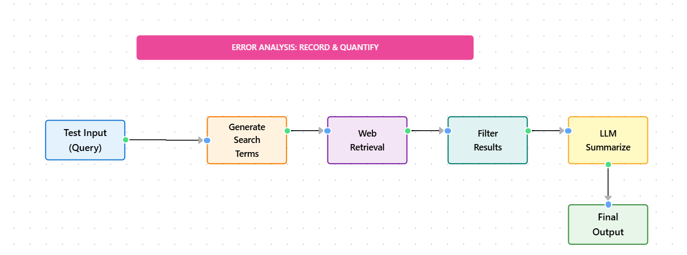

Module 4 — Episode 2
Training:Agentic AI Training
🎯 Learning Objectives
By the end of this episode, you will be able to:
- ✅ Conduct structured error analysis on agentic AI workflows
- ✅ Identify which workflow components most contribute to poor performance
- ✅ Use trace inspection and data-driven methods to prioritize improvement efforts
🧭 Overview
This episode explains how to systematically analyze and improve an agentic AI workflow when its performance is suboptimal.
You’ll learn how to trace intermediate steps, identify weak components, and decide where to focus your optimization efforts.
Error analysis is a core skill for ensuring that your time and resources are spent on the most impactful parts of your system.
🧱 Prerequisites
Readers should already understand:
- The structure of agentic AI workflows (from Module 4, Episode 1)
- Basic familiarity with LLM orchestration and multi-step task pipelines
- How to interpret intermediate model outputs (prompts, search queries, responses)
🔑 Core Concepts
- Error Analysis – A systematic process for identifying which workflow components are responsible for poor outcomes.
- Trace – The complete set of intermediate outputs generated during a single run of an agentic workflow.
- Span – The output of a single step within a trace; commonly used in observability and tracing systems.
- Prioritization Matrix – A structured way to decide which components to improve based on error frequency and fix feasibility.
🖼 Visual Explanation
 Caption:This diagram traces intermediate steps (search term generation, web retrieval, filtering, summarization) to identify where errors occur most frequently, enabling focused optimization efforts.
⚙️ Technical Breakdown
How It Works
1. Run the agentic workflow on several test inputs.
2. Collect traces — intermediate outputs from each step (e.g., search terms, retrieved URLs, selected sources, final summaries).
3. Inspect traces manually or with a small evaluation script to identify where performance diverges from human expectations.
4. Record findings in a spreadsheet, noting which step(s) contributed to each poor outcome.
5. Quantify errors — count how often each component underperforms.
6. Prioritize improvements based on the frequency of issues and the feasibility of fixing them.
Why It Works
Error analysis replaces intuition with data.
Rather than guessing which part of a system to improve, developers rely on evidence from actual failures.
This structured approach:
- Prevents wasted effort on low-impact optimizations
- Surfaces hidden dependencies between components
- Enables iterative, measurable progress toward higher-quality outputs
When To Use It
✅ Ideal Scenarios- After an initial prototype is functional but underperforming
- When multiple components could be responsible for an issue
- Before large-scale retraining or re-architecture efforts
- When the system has too little data to produce meaningful traces
- As a substitute for proper evaluation metrics or user testing
Trade-offs & Limitations
- Time investment: Manual inspection of traces can be slow.
- Subjectivity: Human judgment may bias which outputs are labeled as “errors.”
- Granularity: Overly detailed tracing may overwhelm analysis with noise.
- Automation complexity: Building automated trace analysis pipelines requires additional engineering effort.
Performance Considerations
- Trace storage: Large traces can consume significant disk or database space.
- Computation cost: Collecting detailed spans for every run increases logging overhead.
- Optimization focus: Improving the most error-prone step often yields the best ROI for performance gains.
💻 Code Examples
Minimal Example
# Example: Simplified error analysis for a research agent
from collections import Counter
# Example test cases
prompts = [
"Recent news in black hole science",
"Renting vs buying in Seattle",
"Robotics for harvesting fruit"
]
# Simulated workflow results (simplified)
results = [
{"search_terms": "black hole theories Einstein Event Horizon Telescope",
"search_quality": "ok",
"retrieved_urls": ["astro_kid_news", "spacefun_blog"],
"final_quality": "poor"},
{"search_terms": "renting buying Seattle housing market",
"search_quality": "ok",
"retrieved_urls": ["real_estate_blog"],
"final_quality": "ok"},
{"search_terms": "robot fruit harvesting",
"search_quality": "poor",
"retrieved_urls": ["generic_robotics_news"],
"final_quality": "poor"},
]
# Count where errors occurred
error_counts = Counter()
for r in results:
if r["search_quality"] == "poor":
error_counts["search_terms"] += 1
if r["final_quality"] == "poor":
error_counts["final_output"] += 1
print("Error frequency by component:")
for comp, count in error_counts.items():
print(f"{comp}: {count}")
Error frequency by component:
search_terms: 1
final_output: 2
This indicates that improving search term generation and final summarization quality are likely the most impactful next steps.
🧩 Practical Workflow
| Component | Error Frequency | Example Issue | Potential Fix |
|---|---|---|---|
| Search Terms | 5% | Too generic | Add domain-specific keywords |
| Web Search | 45% | Too many low-quality results | Switch to higher-quality API |
| Source Selection | 15% | Irrelevant sources | Improve ranking prompt |
| Summarization | 10% | Missed key points | Increase context window |
Use this kind of structured table to guide your prioritization.
🧠 Key Takeaways
- Always analyze traces before optimizing.
- Focus on frequent and fixable sources of error.
- Use quantitative tracking (e.g., spreadsheets, counters) to make prioritization objective.
- Avoid spending weeks optimizing components that don’t meaningfully improve overall performance.
Error analysis is the compass that directs your improvement efforts — ensuring that each iteration moves your agentic system toward measurable, reliable gains.